Introduction
bb1840e4-5425-49a3-9d75-477b8f016ff8
Welcome to the Authentication & Authorization Implementation Techniques Practice Lab. In this module, you will be provided with the instructions and devices needed to develop your hands-on skills.
dc640c20-9434-45ea-b7c2-6d4d6a196bfc
Learning Outcomes
In this module, you will complete the following exercises:
- Exercise 1 - Using Directory Services to Administer User and Group Accounts
- Exercise 2 - Authentication Methods
- Exercise 3 - Biometric
- Exercise 4 - Enable Multifactor Authentication
After completing this module, you should be able to:
- Create a Local User
- Manage the User Account Permissions
- Create a Domain User
- Add User to a Group
- Enable Smart Card Logon
- Verify Smart Card Logon Capability
After completing this module, you should have further knowledge of:
- Federation
- Attestation
- Authentication, Authorization, and Accounting (AAA)
- Cloud vs. On-premises Authentication Requirements
- Technologies
- Fingerprint
- Retina
- Iris
- Facial
- Voice
- Vein
- Gait Analysis
- False Acceptance and False Rejection Rates
- Crossover Error Rate
- Factors
- Attributes
Exam Objectives
The following exam objectives are covered in this lab:
- Authentication Methods
- Biometrics
- Multifactor Authentication (MFA) Factors and Attributes
- Authentication, Authorization and Accounting (AAA)
- Cloud vs. On-premises Requirements
Note: Our main
focus is to cover the practical, hands-on aspects of the exam
objectives. We recommend referring to course material or a search engine
to research theoretical topics in more detail.
Lab Duration
It will take approximately 1 hour to complete this lab.
c6fa62a3-1a00-4052-8104-258e8cbaa187
Help and Support
For more information on using Practice Labs, please see our Help and Support page. You can also raise a technical support ticket from this page.
Click Next to view the Lab topology used in this module.
d2c53300-f951-45a9-9aa4-3d4ecae69e11
Lab Topology
During your session, you will have access to the following lab configuration.

Depending on the exercises, you may or may not use all
of the devices, but they are shown here in the layout to get an overall
understanding of the topology of the lab.
- PLABDC01 - (Windows Server 2019 - Domain Controller)
- PLABDM01 - (Windows Server 2019 - Domain Member)
- PLABWIN10 - (Windows 10 - Domain Member Workstation)
- PLABKALI - (Kali Linux 2019.4 - Standalone Server)
Click Next to proceed to the first exercise.
<
Home |
README >
CompTIA Security+ Practice Labs
Exercise 1 - Using Directory Services to Administer User and Group Accounts
Active Directory is a central repository that contains
various objects, such as users, groups, and computers. Active Directory
maintains the central control of the users, groups, computers, and
services running within a domain. You can configure sites, domains,
forests, and organizational units (OU) to manage the Active Directory.
For example, the root is always the forest, which can have one or more
domains. A domain has distinct security boundaries. You can have sites,
which can contain one or more domains, or a domain can contain multiple
sites. If your organization has multiple departments, then you can
create separate OUs for each department.
In Active Directory, one of the key tasks is managing
users and groups. There are two types of users in Windows. The first
type is the domain user, who can log on to any domain system in the
domain with restrictive permissions. The domain users are centrally
managed in a system known as the domain controller. The domain users can
be managed using a graphical interface known as Active Directory Users
and Computers. You can also manage the domain users using Windows
PowerShell.
The other type of user is a local user, who is
restricted to the system in which it was created. The local user cannot
perform a task outside the system in which it was created. It is also
important to note that a local user cannot be part of any domain group,
such as Domain Users. Its scope is strictly limited to the local
computer on which it is created.
In this exercise, you will learn to create local and domain users.
Learning Outcomes
After completing this exercise, you should be able to:
- Create a Local User
- Manage the User Account Permissions
- Create a Domain User
- Add User to a Group
Your Devices
You will be using the following devices in this lab. Please power these on now.
- PLABDC01 - (Windows Server 2019 - Domain Controller)
- PLABWIN10 - (Windows 10 - Domain Member Workstation)
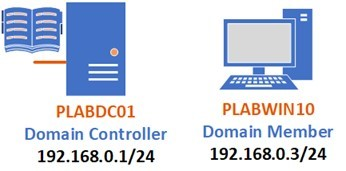
Task 1 - Create a Local User
You can create a local user in any Windows system,
whether it is part of a domain or not. Assume that you are running a
system at home with Windows 10. During the installation, you create a
user, which is local to the system. You can also create several local
user accounts and use them for various purposes, such as running
services or allowing other users to log on to the same system.
In this task, you will learn to create a local user. To do this, perform the following steps:
Step 1
Ensure that you have powered on the required devices. Connect to PLABWIN10.
Right-click Start and select Computer Management.
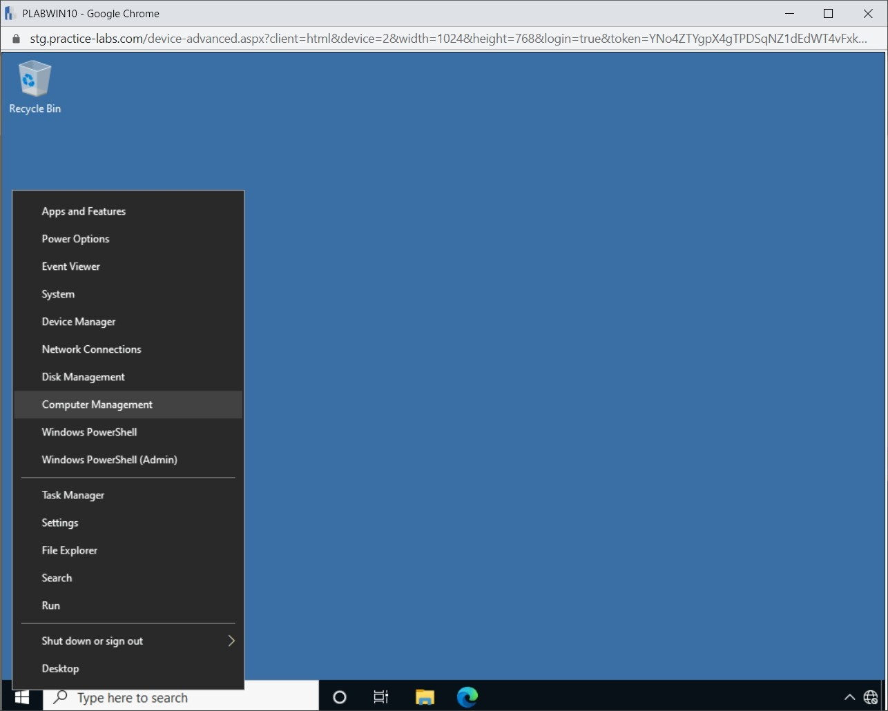Figure 1.1 Screenshot of PLABWIN10: Clicking Start and then selecting Computer Management.
Step 2
The Computer Management window is displayed. In the left pane, click the > arrow to expand Local Users and Groups. Select the Users node.
Notice that the middle pane displays the existing local users on the system.
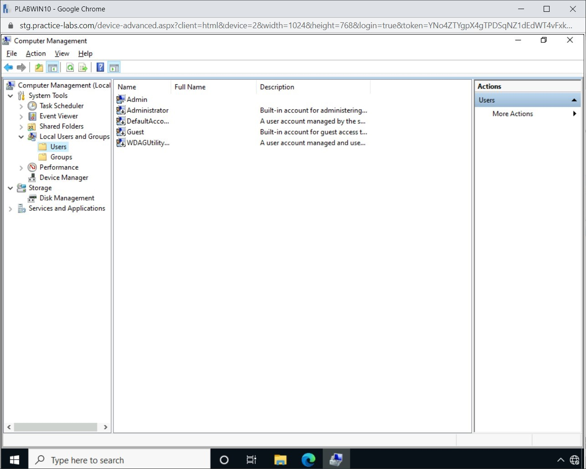Figure 1.2 Screenshot of PLABWIN10: Selecting the Users node under the Local Users and Groups node.
Step 3
In the middle pane, right-click and select New User from the context menu.
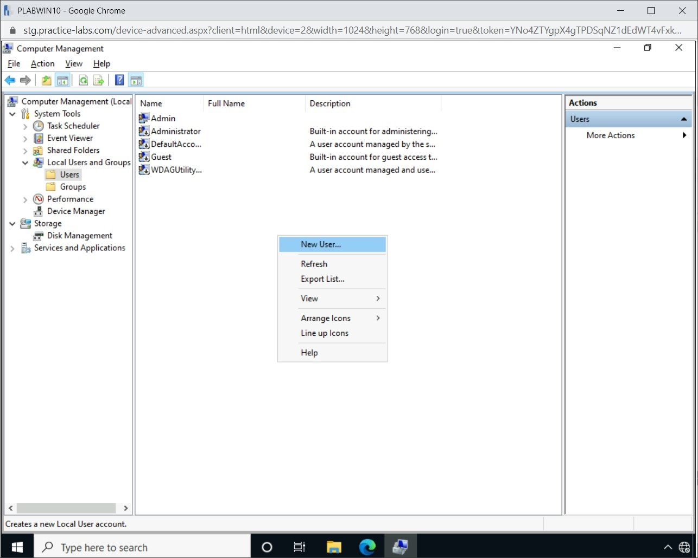Figure 1.3 Screenshot of PLABWIN10: Right-clicking and selecting New User from the context menu.
Step 4
The New User dialog box is displayed. In the User name text box, type the following name:
JaneM
In the Full name text box, type the following name:
Mary Jane
In the Password and Confirm password text boxes, type the following password:
Passw0rd
De-select the User must change password at next logon option.
Click Create.
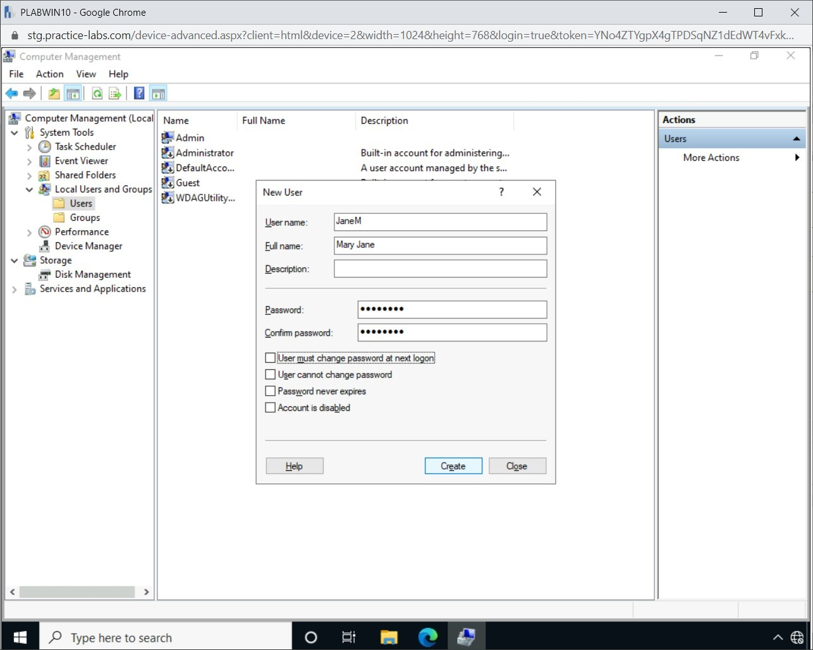Figure 1.4 Screenshot of PLABWIN10: Entering the user information and then clicking the Create button.
Step 5
Click Close on the New User dialog box.
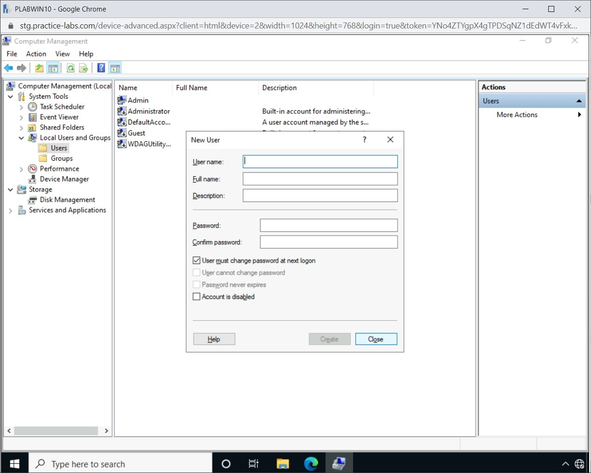Figure 1.5 Screenshot of PLABWIN10: Clicking Close on the New User dialog box.
Step 6
Notice that Mary Jane’s account is now created.
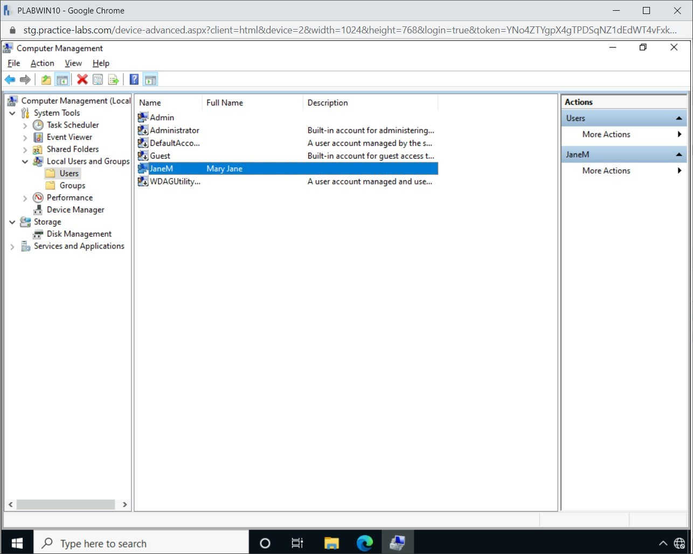Figure 1.6 Screenshot of PLABWIN10: Showing the newly created account with the name Mary Jane.
Keep the Computer Management window open.
Task 2 - Manage the User Account Permissions
The permissions of a user account, whether local or
domain user, depends on the groups it is part of. Both on the local
system and in a domain, various groups are created by default. If you
add a user to a specific group on a local system, the user account
inherits the default permissions of the group.
To manage the user account permissions, perform the following steps:
Step 1
Ensure that you have powered on the required devices. Connect to PLABWIN10.
Ensure that the Computer Management window is open, and you are on the Users node. Right-click Mary Jane’s account and select Properties.
Note: You can also set the password for the user account by right-clicking the user account and selecting Set Password.
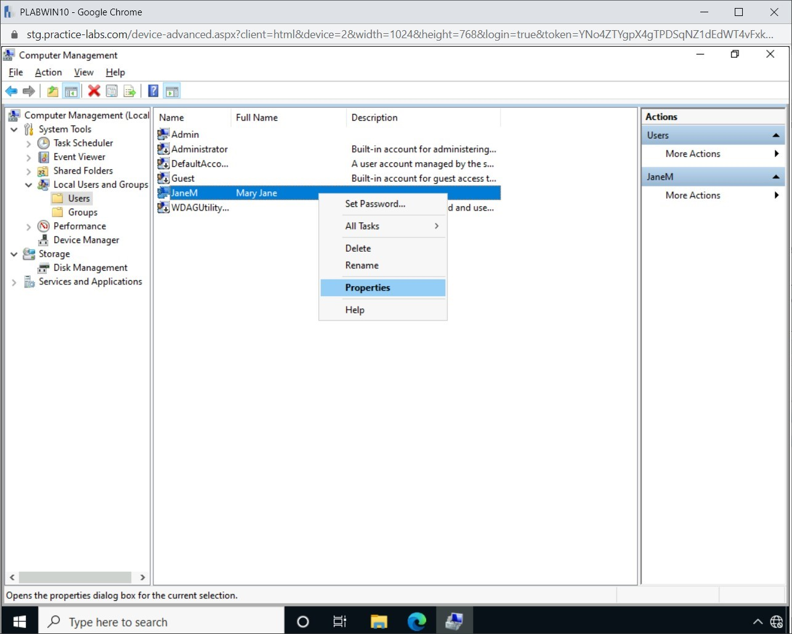Figure 1.7 Screenshot of PLABWIN10: Right-clicking the account and selecting Properties.
Step 2
The JaneM Properties dialog box is displayed. Click the Member Of tab.
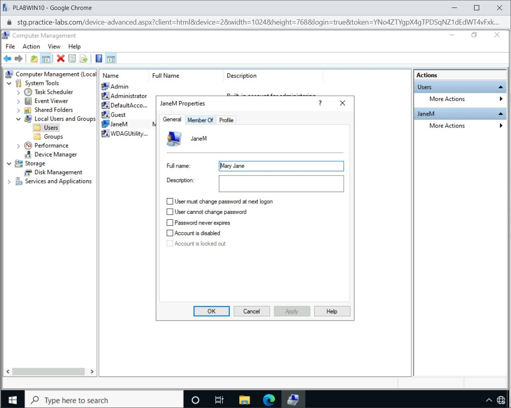Figure 1.8 Screenshot of PLABWIN10: Clicking the Member Of tab on the user’s properties dialog box.
Step 3
Notice that Mary Jane’s account is a member of the Users group on the local system by default. Click Add.
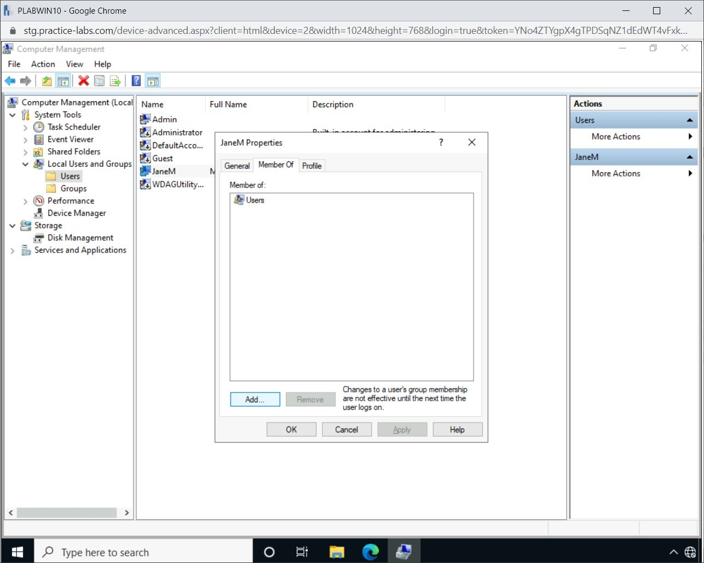Figure 1.9 Screenshot of PLABWIN10: Showing the group membership for the user account and clicking the Add button.
Step 4
The Select Groups dialog box is displayed. In the Enter the object names to select text box, type the following group name:
Backup Operators
Click Check Names.
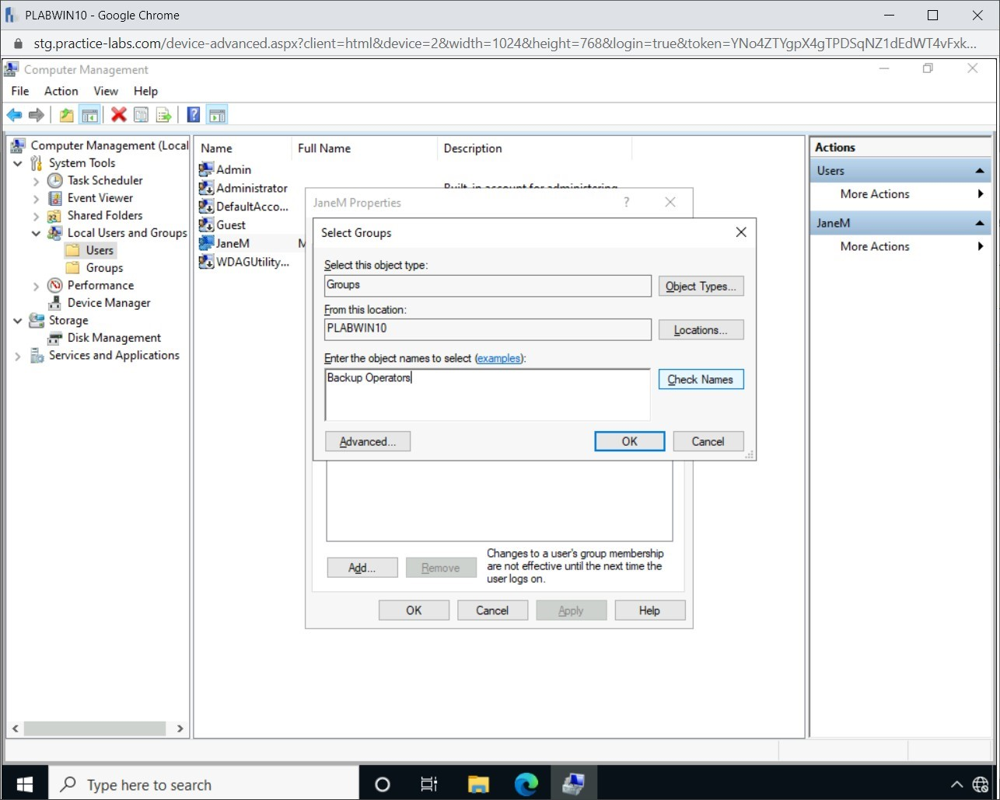Figure 1.10 Screenshot of PLABWIN10: Adding the Backup Operators group and clicking Check Names.
Step 5
Notice that the name is now checked. Click OK to close the Select Groups dialog box.
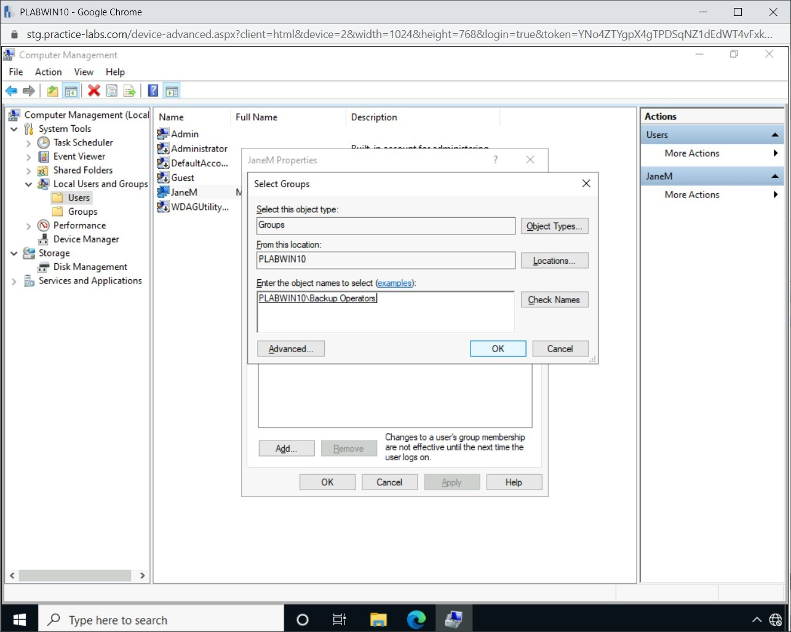Figure 1.11 Screenshot of PLABWIN10: Clicking OK to close the Select Groups dialog box.
Step 6
The Member Of tab on the JaneM Properties dialog box now contains the Backup Operators group. Click OK to close this dialog box.
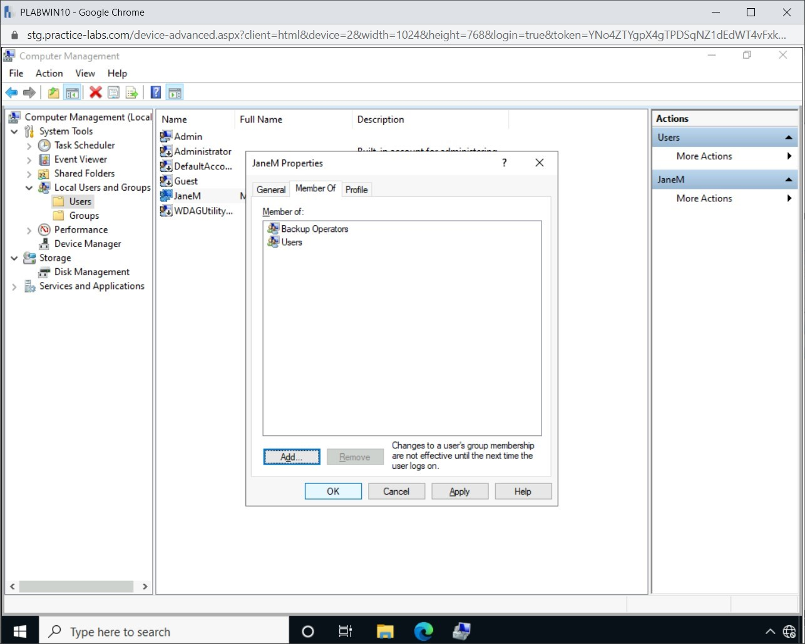Figure 1.12 Screenshot of PLABWIN10: Clicking OK to close the user’s properties dialog box.
Step 7
You are back on the Computer Management window. Close this window by clicking X on the upper right corner.
You have created a local user, which means that the user’s existence is only limited to this system, which is PLABWIN10. Outside the scope of PLABWIN10,
this user’s account does not exist. For example, if you attempt to log
on to this system with JaneM user, you will be able to. However, if you
attempt to log on to any other system with the same username, you will
not be able to. To be able to log on to the domain systems, you need to
create a domain account. Using a local user account, you can log on to a
system, you can perform all tasks like a normal user but within the
same system on which the user account is created.
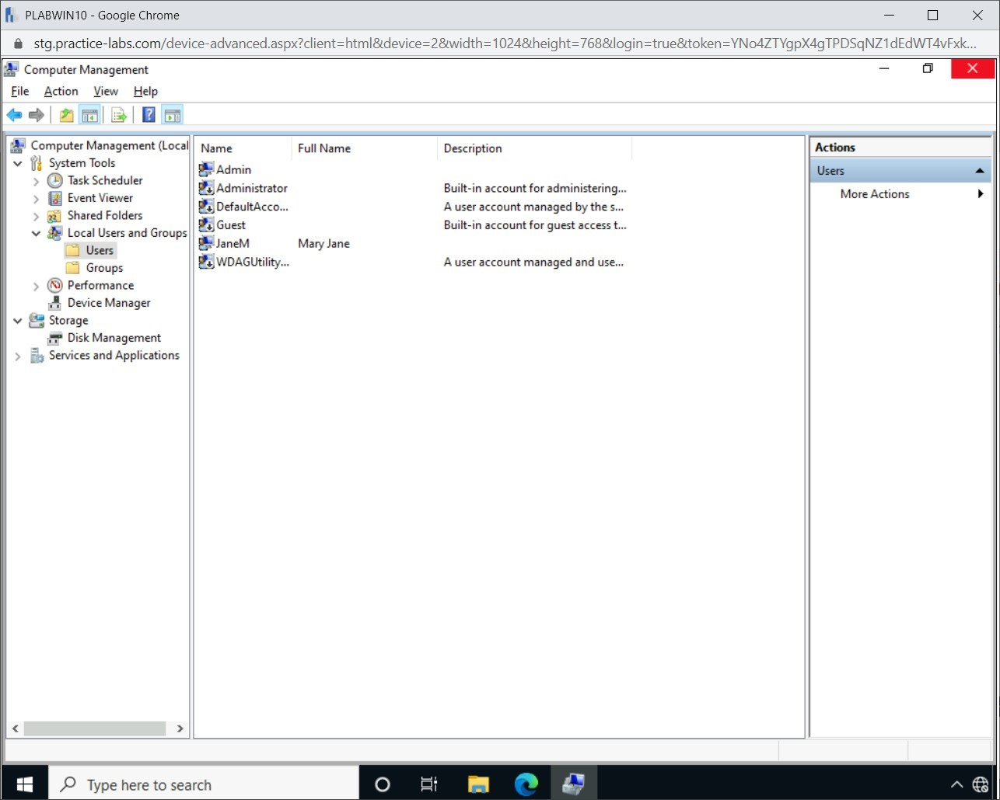Figure 1.13 Screenshot of PLABWIN10: Closing the Computer Management window.
Task 3 - Create a Domain User
Active Directory serves as a single repository of
objects, such as user and computer accounts. You can create a user
account with different levels of permissions. For example, you can
create a normal user account that has a basic level of permissions, or
you can create a user account with administrative permissions. There are
more permissions with which a user account can be created.
A domain user with basic permissions can only perform
normal functions, like logging on to a domain system and performing
routine tasks. However, the user cannot perform administrative tasks,
such as installing an application. To be able to have administrative
privileges on a domain system, the user must be added to the local
administrators group. The domain user can also be added to the domain
groups, which give domain-wide permissions to the user.
In this task, you will create a user domain user account. To do this, perform the following steps:
Step 1
Ensure that you have powered on the required devices. Connect to PLABDC01. The Server Manager window is displayed.
Click Tools, and then select Active Directory Users and Computers.
 Figure
1.14 Screenshot of PLABDC01: Selecting Active Directory Users and
Computers from Windows Administrative Tools in the Server Manager
window.
Figure
1.14 Screenshot of PLABDC01: Selecting Active Directory Users and
Computers from Windows Administrative Tools in the Server Manager
window.
Step 2
Expand practicelabs.com if already not expanded and then select Marketing in the left pane.
Right-click Marketing, select New and then select User.
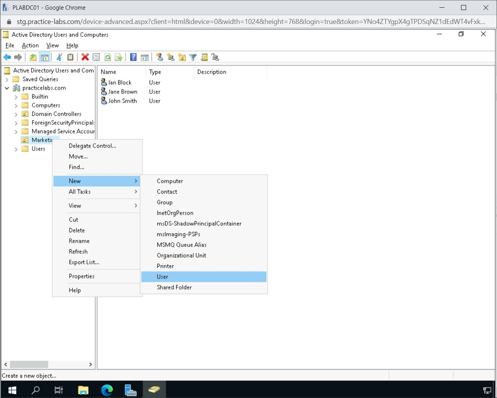Figure 1.15 Screenshot of PLABDC01: Right-clicking Marketing, selecting New, and then selecting User.
Step 3
The New Object - User wizard is displayed. Fill in the following information:
First name:
Josh
Last name:
Fairbanks
User logon name:
FairbanksJ
Click Next.
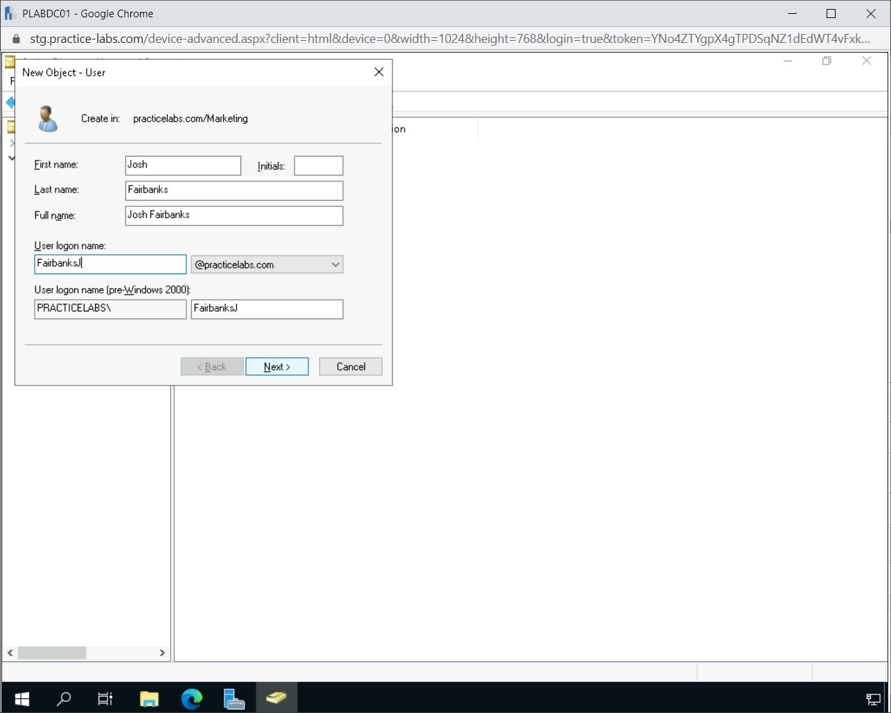Figure 1.16 Screenshot of PLABDC01: Entering the user account details on the New Object - User wizard and click Next.
Step 4
In the Password and Confirm password text boxes, type the following password:
Passw0rd
De-select User must change password at next logon and click Next.
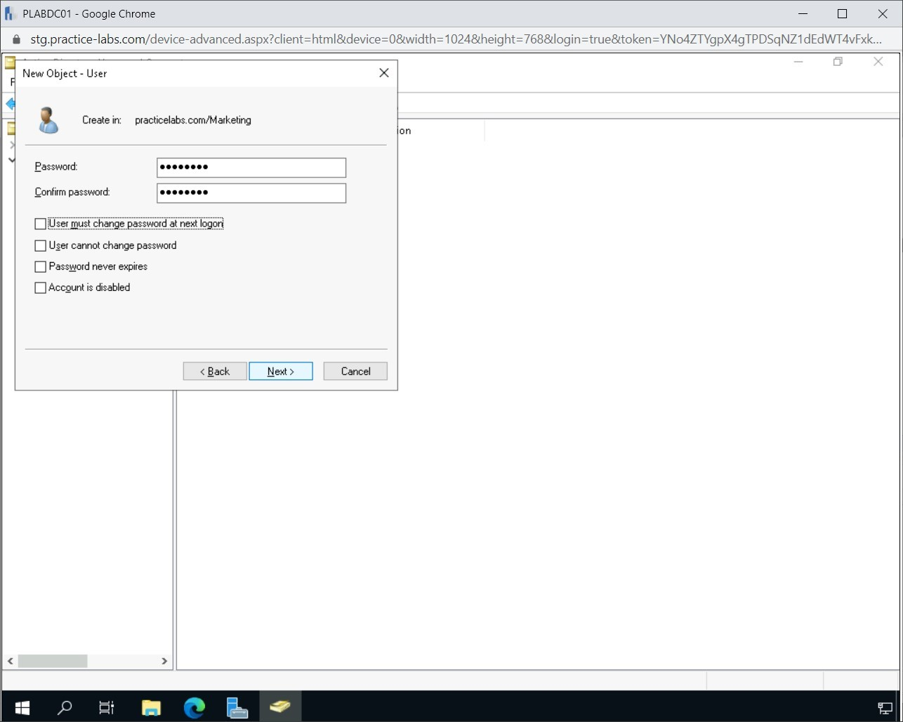Figure 1.17 Screenshot of PLABDC01: Entering and confirming the password and then clicking Next.
Step 5
Review the details and click Finish.
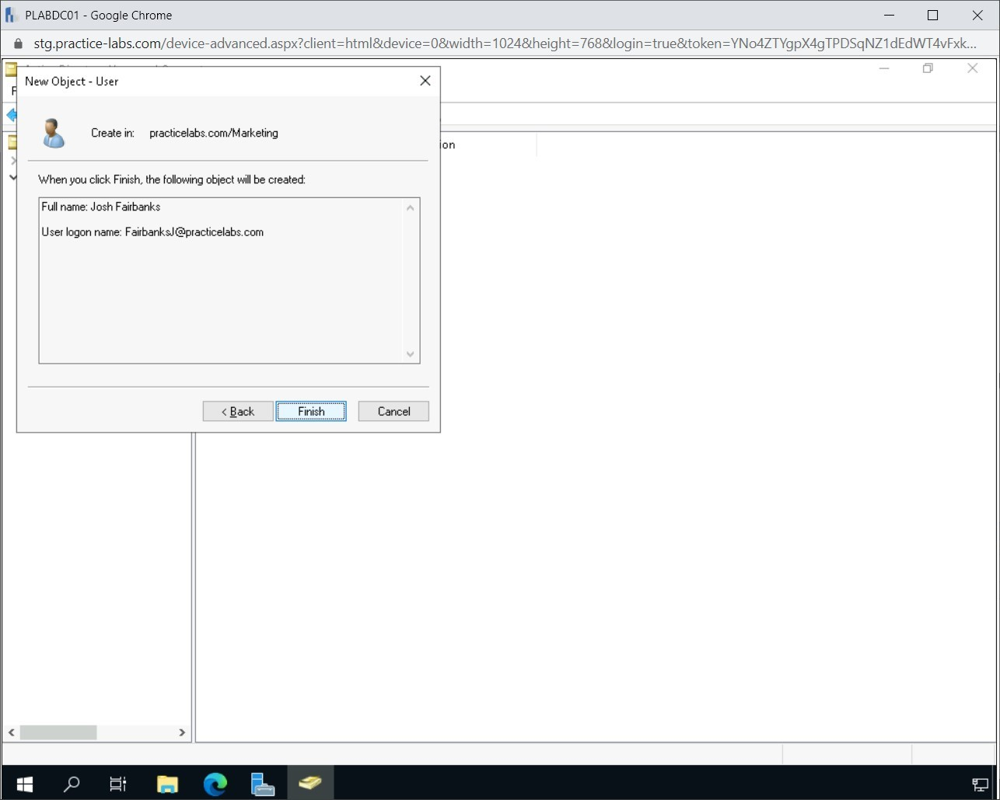Figure 1.18 Screenshot of PLABDC01: Confirming the details and then clicking Finish.
Step 6
Notice that Josh Fairbanks’ account has been created.
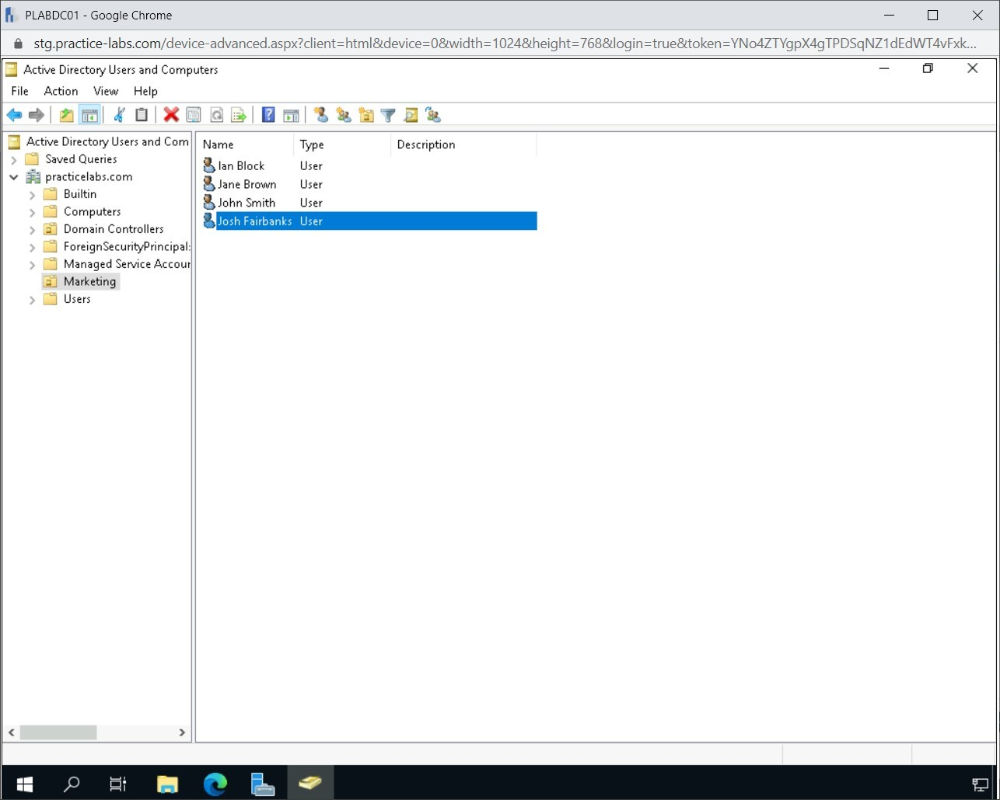Figure 1.19 Screenshot of PLABDC01: Showing the newly created user account named Josh Fairbanks.
Keep the Active Directory Users and Computers window open.
Task 4 - Add User to a Group
By default, when you create a user in the Active
Directory, it is created in the Users group. The permissions of the
Users group are applied to the newly created user. This means that users
can perform the following tasks:
- Running applications
- Using local and network printers
- Logging on to a computer
- Shutting down the computer
- Locking the computer
When you create a user, it is by default added to the
Domain Users group. When a computer joins a domain, the Domain Users
group is added to the local Users group of the computer. This means that
any domain user can log on to the system but can perform limited tasks,
as mentioned above.
To add a user to a group, perform the following tasks:
Step 1
Ensure that you have powered on the required devices. Connect to PLABDC01.
Ensure that the Active Directory Users and Computers window is open.
Figure 1.20 Screenshot of PLABDC01: Showing the Active Directory Users and Computers window.
Step 2
Right-click Josh Fairbanks’ account and select Properties.
Note: To reset the password, you can select the Reset Password from the context menu.
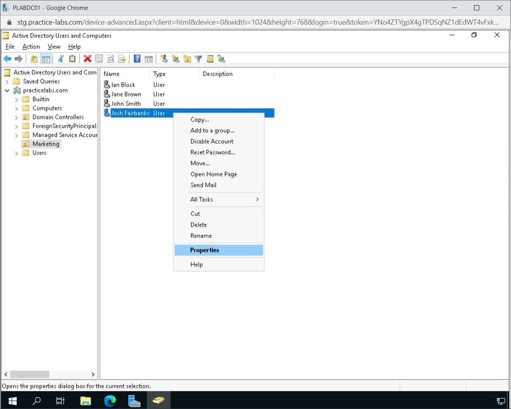Figure 1.21 Screenshot of PLABDC01: Right-clicking the user and selecting Properties from the context menu.
Step 3
The Josh Fairbanks Properties dialog box is displayed. By default, the General tab is displayed. Click the Member Of tab.
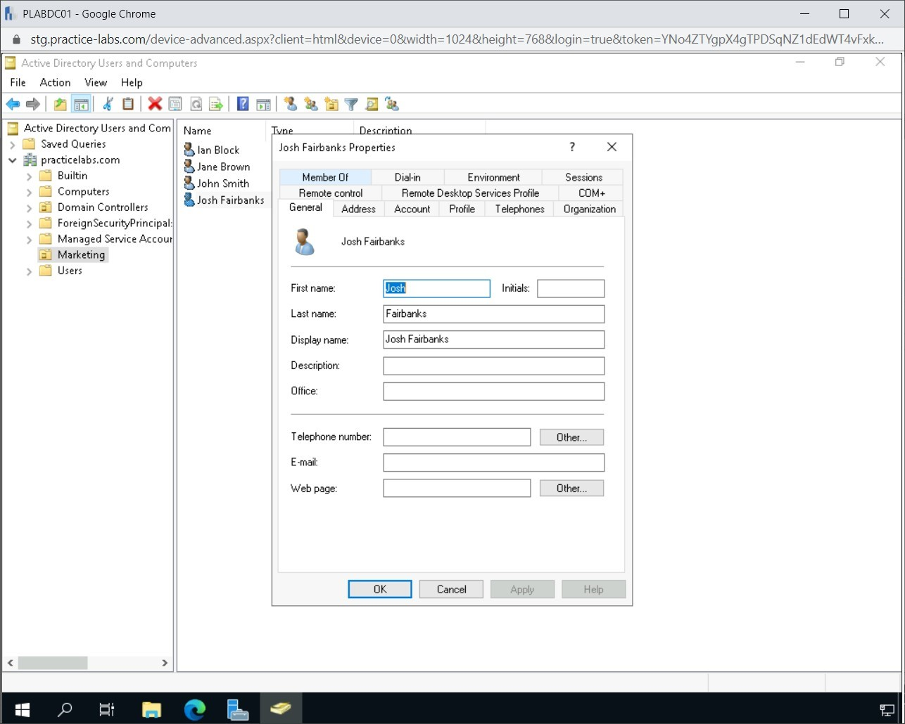Figure 1.22 Screenshot of PLABDC01: Showing the user properties dialog box with the General tab and clicking the Member Of tab.
Step 4
On the Member Of tab, notice that Josh Fairbanks’ account is added to the Domain Users group by default. Click Add.
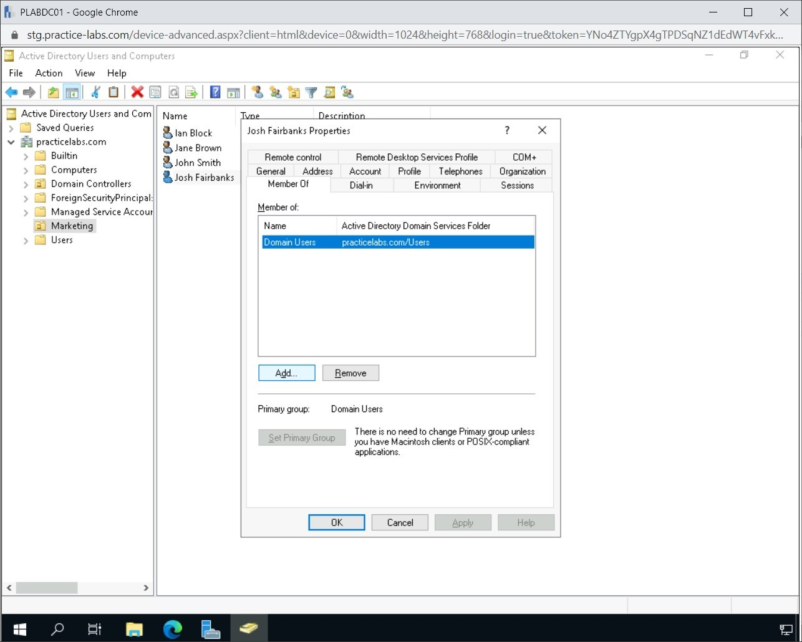Figure 1.23 Screenshot of PLABDC01: Clicking Add on the Member Of tab of the user’s properties dialog box.
Step 5
The Select Groups dialog box is displayed. In the Enter the object names to select text box, type the following group name:
Print Operators
Click Check Names.
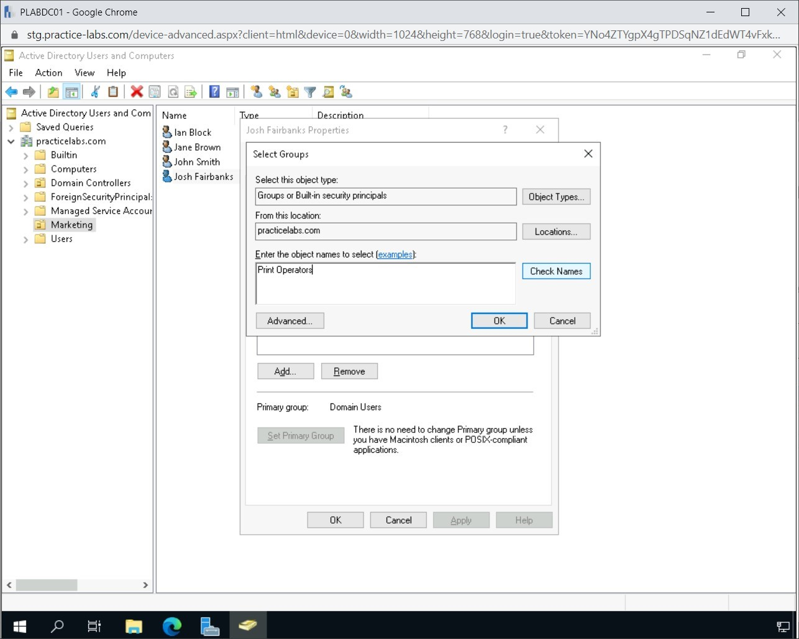Figure 1.24 Screenshot of PLABDC01: Adding the Print Operators group and then clicking the Check Names button.
Step 6
Notice that the name is checked. Click OK to close the Select Groups dialog box.
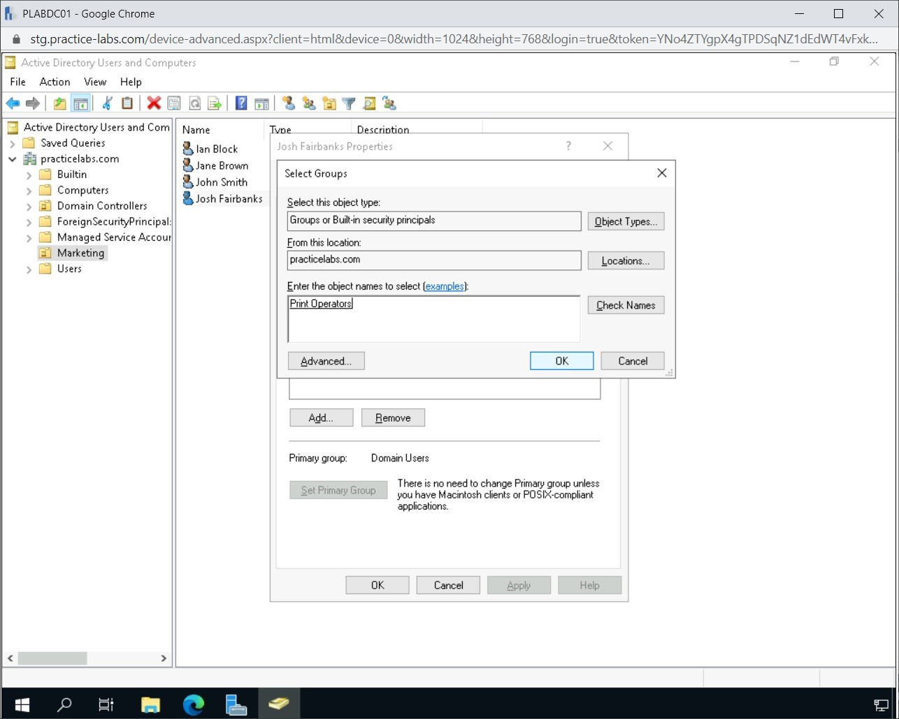Figure 1.25 Screenshot of PLABDC01: Clicking OK to close the Select Groups dialog box.
Step 7
On the Josh Fairbanks Properties dialog box, notice that the account is also added to the Print Operators group.
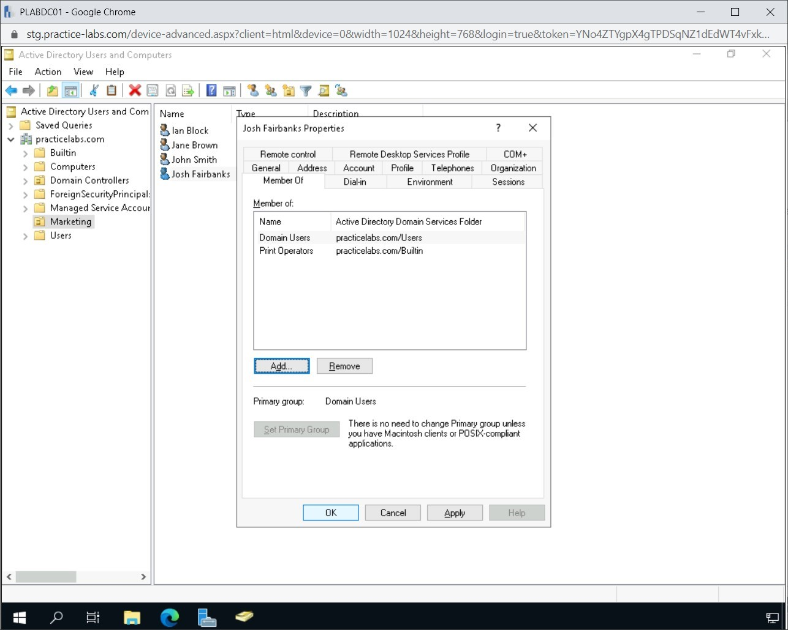Figure 1.26 Screenshot of PLABDC01: Clicking OK to close the user’s properties dialog box.
c5507563-3e73-4ff7-bcbb-c1e8c80814f3
Click OK.
Step 8
You are back on the Active Directory Users and Computers window. Close this window by clicking X on the upper right corner.
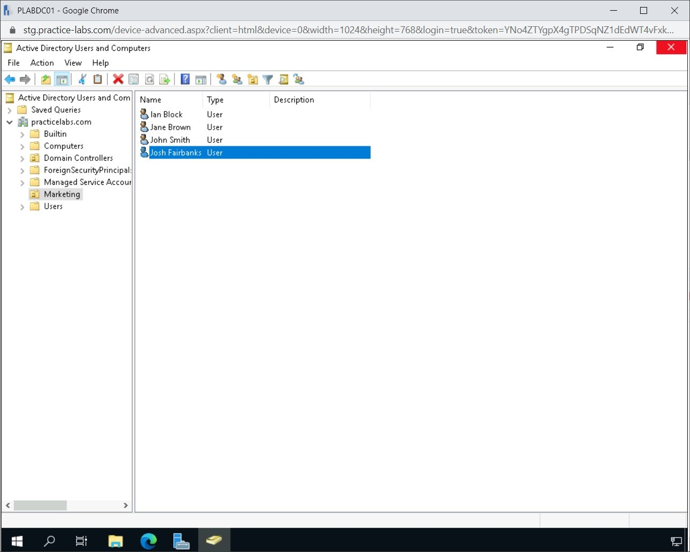Figure 1.27 Screenshot of PLABDC01: Closing the Active Directory Users and Computers window.
Leave all devices in their current state and proceed to the next exercise.
<
Home |
README >
CompTIA Security+ Practice Labs
Exercise 2 - Authentication Methods
Authentication is the process of validating a user’s
identity. When a user attempts to log on to a system, user credentials
are validated to verify the user’s identity. Before the user is granted
access to any object on the network or even on the system, the user’s
identity must be validated using the authentication process. For
example, a user must know not only the username but also the password.
The combination of both are validated in the authentication process.
However, the authentication process can also include other factors, such
as a second factor on which the user is authenticated. The user must
also provide a one-time password (OTP) that is sent to the user. Once
the user enters the username, password, and OTP, the user is
authenticated.
There are different types of authentication methods. Some of the key methods are:
- Password-based
- Multi-factor
- Certificate-based
- Biometric
The password-based method is the most widely used method. In this exercise, you will learn about various authentication methods.
Learning Outcomes
After completing this exercise, you will have further knowledge of:
- Federation
- Attestation
- Authentication, Authorization, and Accounting (AAA)
- Cloud vs. On-premises Authentication Requirements
- Technologies
Your Devices
This exercise contains supporting materials for Security+.

Federation
Often there is a need for an organization to conduct
business with another organization or even a vendor. The organization
may need to establish network connectivity with another organization and
share resources on the network. To be able to do this, you need to
establish a relationship with the other organization’s network and
create security domains to be able to share network resources. The
security domains that help you share resources with another organization
is called the federation process.
In federation, two domains are required. The first
domain is the Resource Partner, and the second domain is the Accounts
Partner. When an organization is sharing network resources with the
other organization, it is called the Resource Partner. For example, a
Web application or certain network shared folders may be granted access
to the other organization, which is the Account Partner. The users who
will be accessing the resources are located in the Account Partner
domain.
Attestation
A hardware root of trust serves as the foundation to secure operations of a system. It serves two key functions:
- store encryption keys that are used in the cryptographic functions
- enable a secure boot process
Root of trust is implemented in the hardware and,
therefore, cannot be tampered with. In a normal scenario, a system is
prone to malware and other types of attacks, and if the encryption keys
are stored in the system, they can be easily stolen. However, the root
of trust is immune to a malware attack.
Root of trust can be implemented in two different ways. It can be either:
- a stand-alone security module
- security module that can be embedded within a processor or system on chip (SoC)
There are two types of hardware root of trust:
- Fixed function: designed to perform a
specific function, such as data encryption. Other functions it can
perform is key management and certificate validation. However, other
than the defined functions, it cannot perform any other functions.
- Programmable: is designed to perform complex tasks and functions. It is possible to upgrade a programmable root of trust.
A root of trust can be applied using:
- A private cryptographic key
- Physically Unclonable Function (PUF)
With the root of trust enforced, the booting process
of a system is considered to be genuine, with any applications running
on it.
Motherboards of the modern systems include a chip
that is known as a Trusted Platform Module (TPM), which provides a
hardware root of trust for secure computing. When a system has TPM, you
can configure it by accessing BIOS within the system. A TPM can perform
various functions, such as:
- Storage of encryption keys
- Management of encryption keys
- Perform encryption and decryption process
- Storage of certificates
- Storage of passwords
Using the TPM, SecureBoot ensures only the trusted
operating system bootloaders can load in the system. For the Secureboot
to work, you need to have two components in the system:
Just like the secure boot, Measured Boot Chain also
works with the Root of Trust. In the Measured Boot process, each object
in the hierarchy is validated. It starts with the Root of Trust, and
then the next object in the chain is computing its hash. In this
process, the current object calculates the hash of the next object and
stores safely. Using this method, a chain of objects is calculated, and
their hashes are computed. The hashes can be reported to a management
station, known as Attestation. When referring to the Measured Boot, the
hashes are stored in the TPM, the Trusted Platform Module.
When a system boots, each object’s hash is compared with the hashes stored in TPM. If every hash meets, the system boots up.
Authentication, Authorization, and Accounting (AAA)
When a user needs to access certain resources on a
network, the user needs to be authenticated and then authorized. After
the authorization, the user’s activities are logged and tracked using
the accounting method.
When a user attempts to connect to a network, the
user needs to be identified, which is the identification process. The
user is identified with a username. Once the identification is complete,
the user needs to be authenticated, which is done with the password.
The user’s identity is proven after the user provides the correct
password.
After the user is authenticated, the user can access
resources on the network on which they are authorized. If the user is
not permitted on certain resources, such as files and folders, the user
is considered to be unauthorized when he or she attempts to access them.
For example, let’s consider an example of two folders, Projects, and
Finance, that are shared on the network. The user is part of the
Operations team and has access to the Projects folder. After the user
logs on to the network, after authorization, the user can access the
Projects folder. On the other hand, the user does not have permissions
to the Finance folder. When the user attempts to access the Finance
folder, the user gets the access denied message.
After the authorization is completed, the user
performs certain access on the network resources. If appropriate logging
is enabled, the user’s actions are tracked and logged into the logs on
the server where the user is connected or performing actions.
Alternatively, the logs may be collated in a central environment. The
logs are used for auditing purposes.
Cloud vs. On-premises Authentication Requirements
Fundamentally, the process of AAA remains the same in
the cloud or on-premise environment. As stated earlier, the user must
be identified and authenticated before being authorized to access
network resources. Similarly, the cloud also requires user
identification and authentication.
In the local environment, you have directory
services, such as Active Directory, that handle the identification and
authentication part. In the cloud environment, you have
Directory-As-A-Service (DaaS) that handles user identification and
authentication. However, in most of the cloud environment, you also have
Identity and Access Management (IAM) that can handle not only the user
and group creation but also the access management for them. For example,
Amazon AWS offers AWS IAM, which allows you to create and manage users
and groups. Using AWS IAM, you can also enable multi-factor
authentication and integrate it with your organization’s directory
services.
Similarly, IAM can also be installed and configured
in an on-premise environment. However, one has to remember that there
are additional overheads when dealing with on-premise infrastructure.
You would need to procure servers as well as a license for IAM.
Technologies
In most cases, users are forced to provide a password
to authenticate themselves. However, various other methods can be used
to add another authentication method along with the password. Let’s look
at some of these methods that can be used for authentication.
Time-based One-Time Password (TOTP)
TOTP is a password that has a timestamp and is valid
only for a specific duration. For example, a TOTP is valid only for 30
seconds, and after 30 seconds are over, the TOTP expires and cannot be
used anymore.
HMAC-based one-time password (HOTP)
HOTP uses hash-based message authentication codes
(HMAC) functions to create a one-time password. HOTP uses a secret key
and also an incrementing counter. Then, the HMAC creates the hash value,
which is then converted into a 6-digit or sometimes 8-digit HOTP value.
Short Message Service (SMS)
SMS is used for sending short messages up to 160
characters. A mobile device can send and receive messages. SMS is the
key delivery methods for OTPs or TOTP’s. OTPs and TOTPs are time-bound
messages that are delivered via SMS and expire after a certain time
period. For example, assume that you are attempting to log on to your
bank’s website. You need to authenticate yourself with your username and
password. The website will then send an SMS with an OTP to your
registered mobile device’s number which provides a second level of
authentication which is also referred to as Multi-factor authentication
(MFA). The OTP needs to be entered to complete the authentication
process. A time limit is associated to the OTP and can vary depending on
the application being accessed.
Token key
A token key is also known as a key fob, which is the
size of a USB drive. It contains a Liquid Crystal Display (LCD) that
displays a number, which is generated by a server. The token key is
synchronized with the server, which updates the number every 60-seconds.
When you need to authenticate using a token key, you need to provide
the user credentials and the number generated. This combination of
username, password, and the number is then used to authenticate the
user. However, if the number changes while you are entering it for
authentication, the authentication will fail. There is no sequence to
these numbers that are displayed on the token key. These numbers are
dynamically generated by the server and synchronized with the token
keys.
Static Codes
An authenticator app generally generates static
codes. When you configure an authenticator app, it generates static
codes that you have to store somewhere safe. Static codes are required
when you lose access to the app, such as a messaging service, you can
use the static code to recover your access.
Authentication Applications
Authentication applications are designed to provide
application-level authentication. Authentication applications also
support digital signatures. Kerberos is one such example. It is the
authentication protocol used by Windows servers running Active Directory
Domain Services. Kerberos uses a centralized server that authenticates
users to servers and vice versa. It uses an Authentication Server (AS)
and a Ticket Granting Server (TGS).
Push Notifications
A push notification is an alert sent to an app
installed on a mobile device, which can either be a mobile phone or a
tab. Notifications were initially used for alerting the user about an
Email that has been received on the mobile phone. However, later, push
notifications were adopted as a marketing strategy and are now used with
almost all apps installed on a mobile device.
For example, let’s consider that you have WhatsApp
installed on your mobile. When a message is received, a notification is
generated by default. When you install an app on a mobile device, the
notifications are automatically enabled for the app. However, in the
Settings section, you can navigate to the notifications section and
disable notifications for a particular app.
It is important to note that push notifications are
app-driven, not the mobile make or the mobile platform. For example,
push notifications will work on an app, whether it is installed on an
Android phone or an iPhone.
Phone Call
A phone call can also be used for authentication.
Some mobile apps, when you are setting them up on the mobile device, may
trigger a call on your registered mobile number. After you verify
yourself, the app will then start working.
An example can be an app that uses a phone call as an
authentication method. For example, let’s consider that you stay in an
apartment building. When a visitor comes, the security guard feeds the
information in an app, which triggers an automated call to your
registered mobile number. You have to press a key to either authorize
the visitor to enter or press another key to reject the incoming visitor
request.
7429868b-128c-4069-95a9-7246a6a9e5a3
<
Home |
README >
CompTIA Security+ Practice Labs
Exercise 3 - Biometric
Biometric authentication utilizes a physical
characteristic of an individual to authenticate him or her. For example,
authentication of an individual can be done using a fingerprint or a
retina scan. Once the user is authenticated, the user is authorized to
access the system or the data within a system. Biometric authentication
is widely used at the entry point of a room or even with laptops.
Several latest laptop models are equipped with fingerprint
authentication. Many mobile manufacturers have integrated the
fingerprint and face scanning methods to authenticate a user.
The biometric process has two parts to it. The first
part is the enrolment in which a physical characteristic of an
individual is registered. The system does not store the physical
characteristics but converts it to a numerical value and stores it in
the database. The second part is the authentication. When a user uses
the physical characteristic for the authentication purpose, it is again
converted to the numeric value and compared with the stored value in the
database. If both the values match, then the user is authenticated.
In this exercise, you will learn about various biometric authentication methods.
Learning Outcomes
After completing this exercise, you should have further knowledge of:
- Fingerprint
- Retina
- Iris
- Facial
- Voice
- Vein
- Gait Analysis
- False Acceptance and False Rejection Rates
- Crossover Error Rate
Your Devices
This exercise contains supporting materials for Security+.

Fingerprint
Fingerprints can be used for identification or even
authentication. When you are entering a data center, you would typically
see a biometric system installed. In most cases, it is the fingerprint
scanner that authenticates a user, and once the user is authenticated,
the door to the data center opens. Mobile devices are also equipped with
fingerprint scanners. Some mobile devices have a fingerprint scanner on
the back, but several new models have a place for the fingerprint
scanning on the screen itself. The sensor inside the screen scans the
fingerprint and authenticates the user.
Retina
The retina scanner scans the pattern of the blood
vessels of the retina. Each individual has a unique blood vessel
pattern. After a user’s retina is registered with the retina scanner,
the same pattern is detected during the authentication. If there is a
variation in the pattern, the user is not authenticated.
Iris
The iris scanner scans the iris pattern of an individual. If the pattern is matched, then the user is granted access.
Facial
A human face has certain features, such as the shape,
size, and position of the ear, nose, and eyes. In the facial
recognition process, the face is scanned for the facial features and
their size and positioning. Most of the recent mobile models (mid-range
and high-end) have facial recognition features.
Voice
Each human voice has a certain pattern, pitch, and
modulation. In the voice recognition feature, these are compared against
the values stored for that individual.
Vein
Vein recognition is also known as vascular
biometrics, which is used to scan the veins in fingers, hand, or even in
the eyeball. The layout of the vein is stored and then later compared
when the user attempts to authenticate himself or herself.
Gait Analysis
Gait analysis is a method of discovering who you are.
Each individual has specific body measurement and anatomical factors.
Gait Analysis is largely used as a method to detect a specific
individual. When an individual walks, there is a specific style each
individual has. Using the Gait analysis, a person can be recognized and
detected.
False Acceptance and False Rejection Rates
False Acceptance Rate (FAR) is a method that
determines the probability of the number of incorrect requests that will
be accepted by a biometric system. The formula for calculating FAR is:
FAR = number of incorrect accepted requests/number of authentication attempts
The False Rejection Rate (FRR) is a method that
determines the probability of the number of incorrectly rejected
authentication attempts by a biometric system. The formula for
calculating FRR is:
FRR = number of false rejections / numbers of authentication attempts
Crossover Error Rate(CER)
The CER or Crossover Error Rate occurs when the
accept (FAR) and reject rates (FRR) are equal or close to each other. In
this scenario, the biometric system is performing optimally. It is
always good to have both FRR and FAR close to each other. If they are
close to each other, this means that the biometric system is working as
it should be.
7429868b-128c-4069-95a9-7246a6a9e5a3
<
Home |
README >
CompTIA Security+ Practice Labs
Exercise 4 - Enable Multifactor Authentication
When a user attempts to log on to a local system or a
networked system, the user needs to be first identified and then
authenticated. In the authentication process, the user has to provide a
password along with the username, which is part of the identification
process. Once the user is authenticated, the user can access the system
or the resources on which the user has been assigned permissions. With
the username and password combination, single-factor authentication
occurs.
When a user is asked to enter the user credentials
and also use another method to complete the authentication process, then
it is called multifactor authentication. For example, on a system, a
user provides a username and password and is then prompted to use the
smart card. This is an example of multifactor authentication.
In multifactor authentication, you can use different
factors, such as something you have or something you know. You can also
use attributes, for example, something you exhibit.
To learn more about how to configure multifactor
authentication in Windows, please refer to your course material or use
your preferred search engine to research this topic in more detail.
Learning Outcomes
After completing this exercise, you should be able to:
- Enable Smart Card Logon
- Verify Smart Card Logon Capability
After completing this exercise, you should have further knowledge of:
Your Devices
You will be using the following devices in this lab. Please power these on now.
- PLABDC01 - (Windows Server 2019 - Domain Controller)
- PLABWIN10 - (Windows 10 - Domain Member Workstation)

Factors
Multifactor authentication mechanism comprises multiple authentication factors, which can include two or more of the following:
- Something you know (the knowledge factor):
This includes the password and also the answers to the secret questions.
A user must provide this to be able to authenticate himself or herself.
- Something you have (the possession factor): This includes something that you have. It could be a one-time password (OTP), a security token, or even an identity card.
- Something you are (the inherence factor):
This includes the biological traits, which are used for authentication.
It could include a retina scan, fingerprint scan, iris scan, voice
recognition, and face recognition.
You can use a combination of something you know and
something you are. This makes authentication stronger than simply using
something you know, which is a password typically.
In recent times, location factors are also being used
for multifactor authentication. Most smartphones have a GPS feature,
which makes this authentication possible. It relates to somewhere you
are - your location is used as authentication. For example, a user is
allowed to work from home, and his or her home location is considered
the authentication factor.
It is also possible to use the time factor as another
authentication factor. For example, a user cannot access his or her
account outside office hours. This prevents any misuse of the user’s
account outside the office hours.
Multifactor Authentication Technologies
Some of the key multifactor authentication technologies are:
- Security tokens
- Soft tokens
- Mobile authentication
- Biometric authentication methods - retina scans,
iris scans, fingerprint scans, finger vein scans, facial recognition,
voice recognition, and so on.
Attributes
Other than the factors, certain attributes can be validated. These attributes are:
- Somewhere you are - It is an address where you can be located. It uses Geolocation technology to identify your location.
- Something you can do - Something you do is
based on your habits, such as your signature that can be validated. It
could also be how you type on the keyboard. Windows 10 supports
picture-based passwords. You have to add gestures to the picture and
identify them when you want to unlock the system.
- Something you exhibit - It could be a trait that can be scanned and validated, such as a neurological trait, which can be scanned using the MRI methods.
- Someone you know - It could be someone who can be validated by a chain of trust.
Task 1 - Enable Smart Card Logon
Logging in to a system using a smart card typically
calls for third-party software installed on the client and servers.
Also, management tools are required to administer the creation and
revocation of the smart card to corporate users.
In this task, you will select a domain user account to use a smart card for signing-in to the domain network.
Note: There is
no physical smart card installed on the lab device. The following steps
will merely show how to enable a smart card logon.
Step 1
Ensure you have powered on the required devices defined in the introduction and connect to PLABDC01.
Open the Server Manager window if already not opened.
Click Tools and select Active Directory Users and Computers.
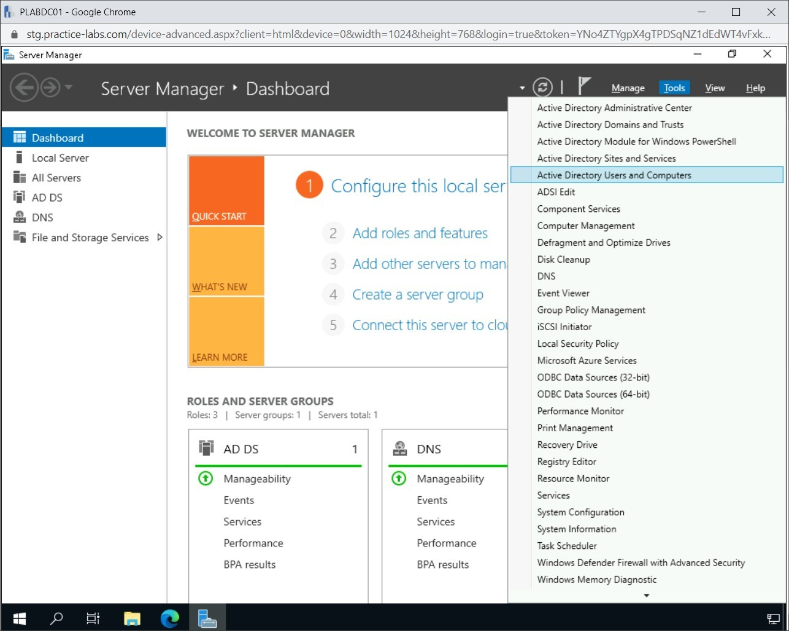Figure 4.1 Screenshot of PLABDC01: Clicking on the Tools menu in Server Manager to select Active Directory Users and Computers.
Step 2
On the Active Directory Users and Computers console, select the Marketing organizational unit in the left pane.
At the right details pane, right-click Jane Brown and select Properties.
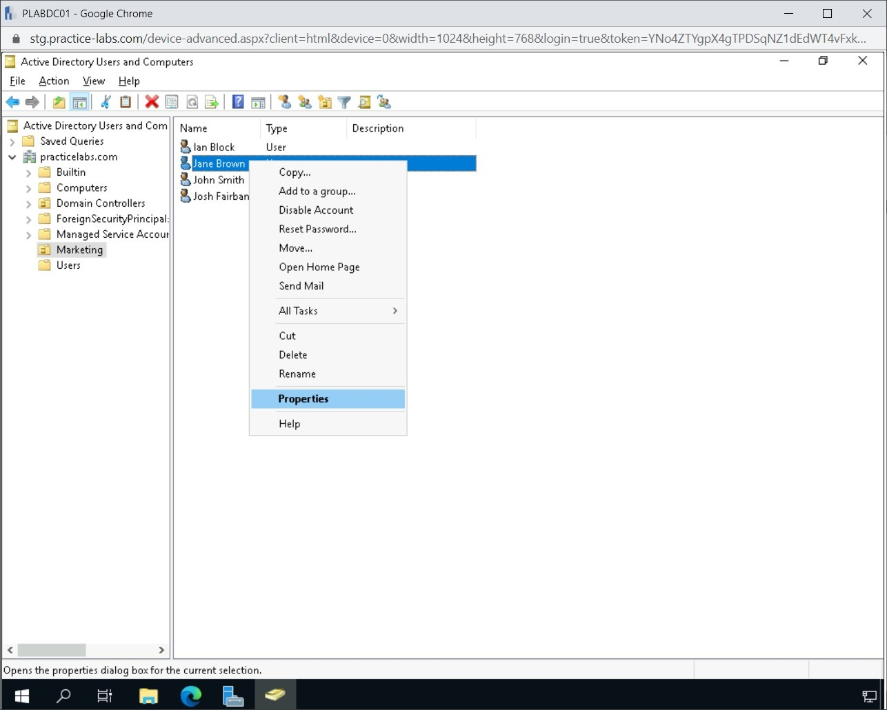Figure 4.2 Screenshot of PLABDC01: Right-clicking on a user and selecting Properties from the context menu.
Step 3
On the Jane Brown Properties dialog box, click the Account tab.
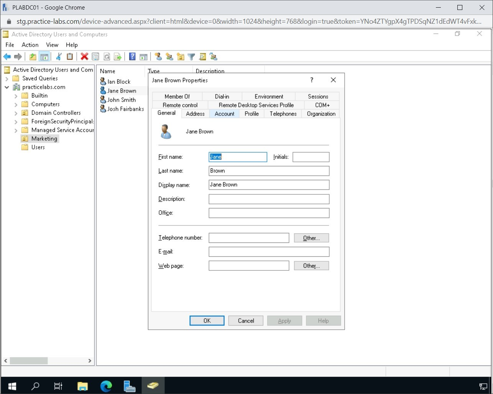Figure 4.3 Screenshot of PLABDC01: Clicking the Account tab on the user properties dialog box.
Step 4
On the Account tab under the Account options section, scroll down a bit.
Select the Smart card is required for interactive logon checkbox.
c5507563-3e73-4ff7-bcbb-c1e8c80814f3
Click OK to save changes.
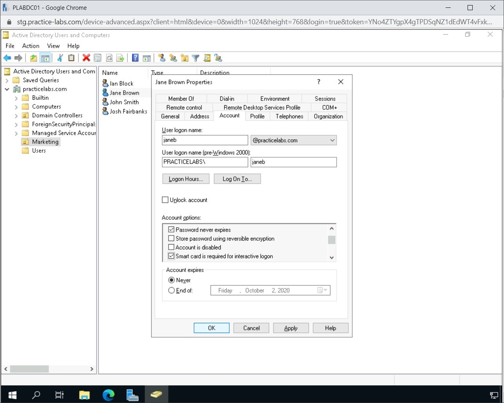Figure 4.4 Screenshot of PLABDC01: Selecting the smart card option on the user properties dialog box.
Close Active Directory Users and Computers window.
Task 2 - Verify Smart Card Logon Capability
In the previous task, you have configured the user to
log on with the smart card. This means that if the user does not have
the smart card, the user will not be able to log in. When you enable a
smart card, a password is still required. After you provide the
username, you are prompted to first provide the username and password,
and then you need to use the smart card. In this task, you will sign-in
as a domain user to test the smart card logon capability. To do this,
perform the following steps:
Step 1
For this step, you will need to disable the Auto login feature. Please see our help and support page for more information on how to do this.
Step 2
Connect to the PLABWIN10 device. On the sign-in screen, click Other user.
In the User name text box, type:
janeb
In the Password text box, type:
Passw0rd
Press Enter.
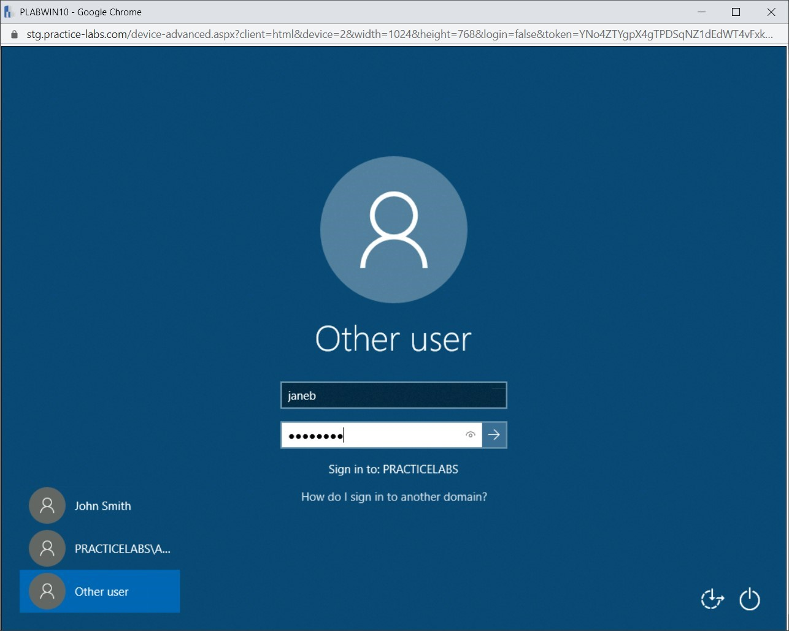Figure 4.5 Screenshot of PLABWIN10: Clicking the Other user option and then entering the user credentials.
Step 3
Since the user was configured to use a smart card for logon, the system message appears.
Note that due to the system limitations of this lab, you will not be able to proceed beyond this step.
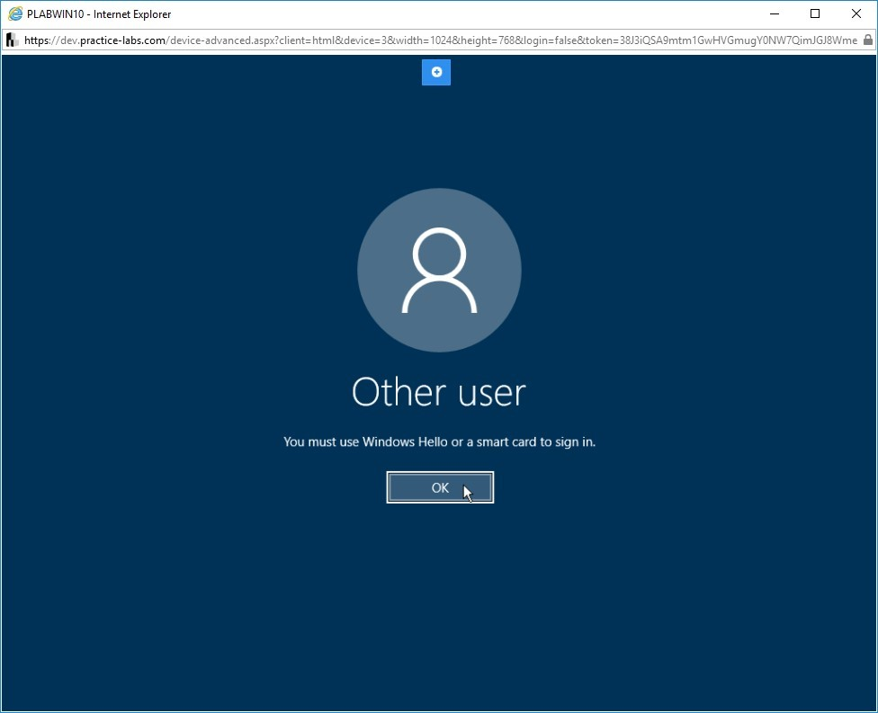Figure 4.6 Screenshot of PLABWIN10: Showing the error of smart card and then clicking OK.
Close the PLABWIN10 window.
d31298f5-3011-4089-bf06-fbf08c44a7f9
Keep all devices that you have powered on in their current state and proceed to the review section.
Review
Well done, you have completed the Authentication & Authorization Implementation Techniques Practice Lab.
c6e74811-6d1f-4779-94c2-34fcca239022
64762633-3c7d-459b-b080-b1d0d295c4b1
9aeecefd-ab8e-450c-b791-916da19ea0a8
d8a12f33-9008-4b39-93ac-3bdbf5ba7eef
1061abe8-bd38-4998-ba52-c4a0cd0b2c0a
cc4c7921-29fc-4a7b-aabe-ce4d12efcf6f
aaaaaaaa-1111-1111-1111-193f35a24fe3
Summary
You completed the following exercises:
- Exercise 1 - Using Directory Services to Administer User and Group Accounts
- Exercise 2 - Authentication Methods
- Exercise 3 - Biometric
- Exercise 4 - Enable Multifactor Authentication
You should now be able to:
- Create a Local User
- Manage the User Account Permissions
- Create a Domain User
- Add User to a Group
- Enable Smart Card Logon
- Verify Smart Card Logon Capability
You should now have further knowledge of:
- Federation
- Attestation
- Authentication, Authorization, and Accounting (AAA)
- Cloud vs. On-premises Authentication Requirements
- Technologies
- Fingerprint
- Retina
- Iris
- Facial
- Voice
- Vein
- Gait Analysis
- False Acceptance and False Rejection Rates
- Crossover Error Rate
- Factors
- Attributes
Feedback
067744a4-4299-4662-b5be-04dbb636a007
Shutdown all virtual machines used in this lab. Alternatively, you can log out of the lab platform.